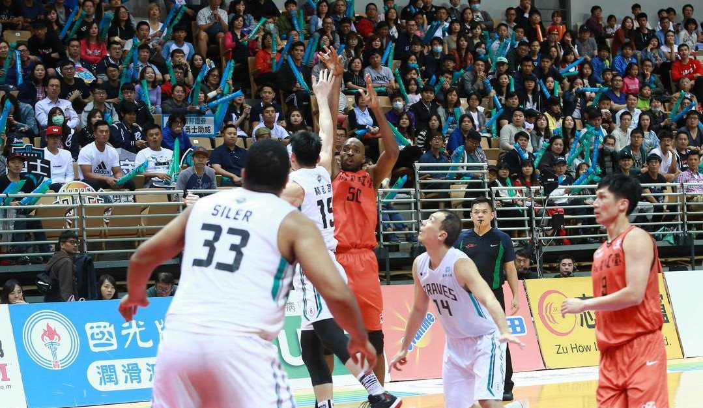

NEWS 最新消息

203公分戴維斯改當射手 簡浩：姿勢不錯
2018.04.24
璞園今(24)日外線手感發燙，不僅當家射手簡浩找回身手三分球6投5中，兩位當家長人戴維斯、陳冠全都跳出來，簡浩還稱讚「新台灣人」，「出手姿勢不錯，」並透露他是苦練型的球員。目前，璞園總冠軍系列賽以2:1領先富邦。
簡浩前2戰三分球僅出手6次投進3球，今天終於找回射手本色，簡浩直說，「前兩場想太多，今天出手完全沒想就投。」也認為是防守做得好，所以更有信心出手，「今天一開始很專注，沒讓對方壓著打，昨天練習有針對問題練。」
戴維斯和陳冠全今天合力砍下6記三分球，對於當家長人轉變，簡浩透露他和戴維斯有聊過，「老外都很大支，他可能是最小的，他可能需要朝更全面發展。」
簡浩說，「戴維斯會設定投100顆三分球，或是中距離練完加練外線，我還要幫他撿球。」並笑說當射手要有天分，而戴維斯有那個天分。
「今天才是真正的璞園」麥班達表示，「每個人都打起來，首節加強防守，帶起進攻的信心，高雄讓他們打太順，今天失誤16次也有控制，不過還不是最好。」前兩役璞園發生多達28及20次失誤，有越來越好的趨勢。